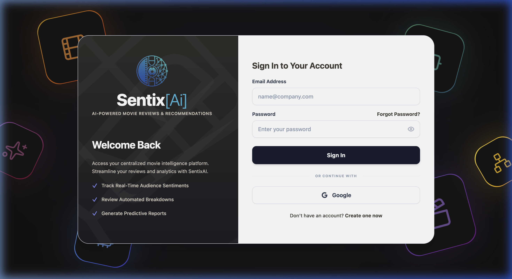
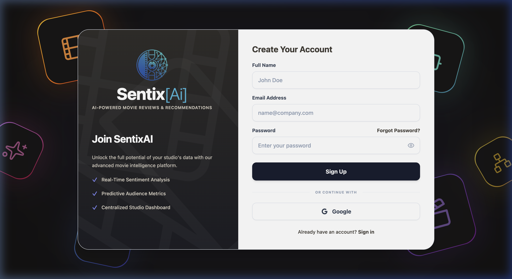
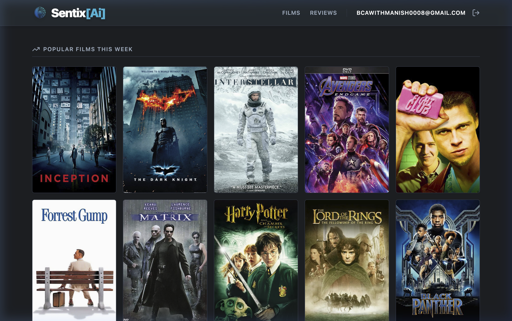
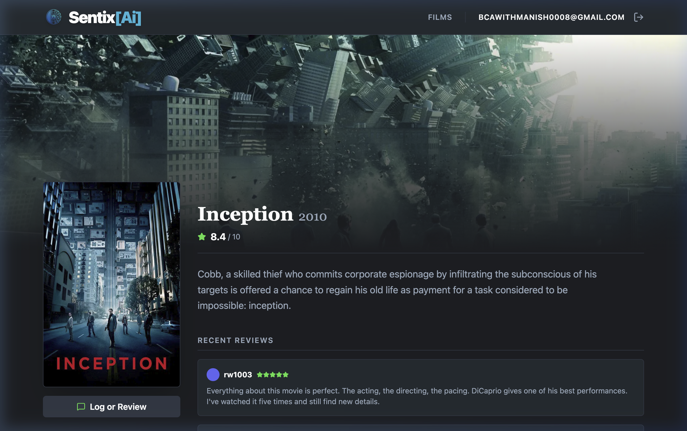
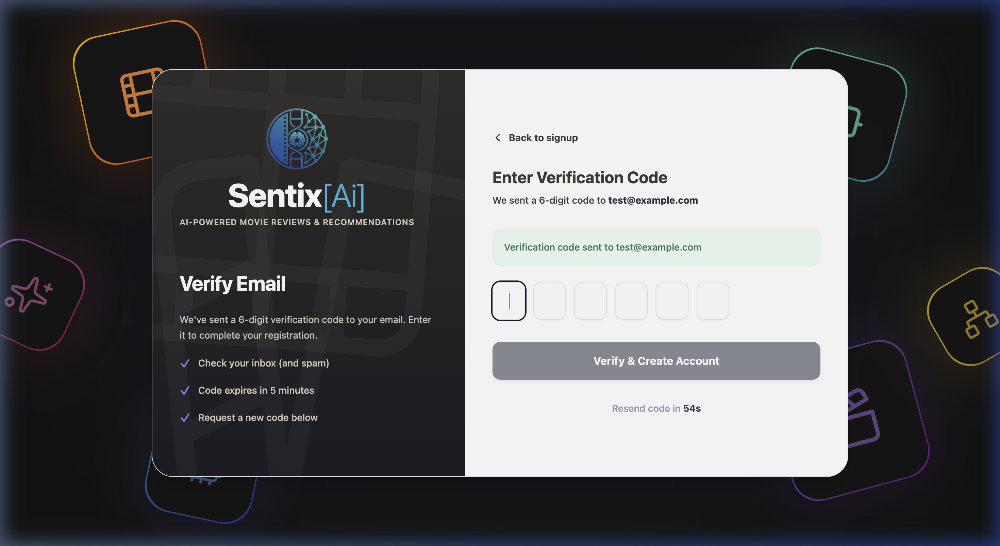
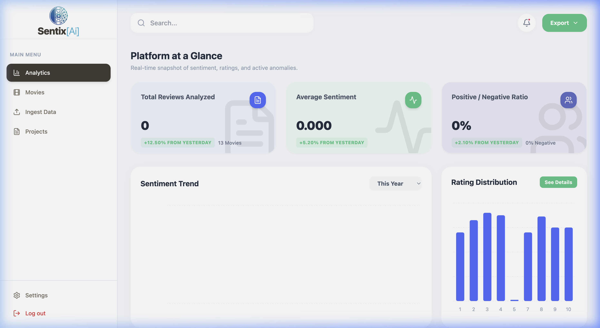

In the modern era of digital entertainment, millions of movie reviews are posted daily across platforms like IMDb, Rotten Tomatoes, and Letterboxd. However, manually reading and understanding the overall sentiment behind thousands of reviews for a single film is a time-consuming and impractical task for both audiences and film industry professionals.
SentixAi addresses this problem by building an intelligent, AI-powered movie review platform that automatically:
SentixAi follows a modern three-tier architecture consisting of a React-based frontend, a Node.js/Express backend API, and a SQLite database managed through Prisma ORM. The AI layer operates as an embedded service within the backend.
┌──────────────────────────────────────────────────────────────────────┐
│ CLIENT (Browser) │
│ ┌──────────────┐ ┌──────────────┐ ┌───────────────────────────┐ │
│ │ Home Page │ │ Movie Detail │ │ Admin Dashboard │ │
│ │ (Movie Grid)│ │ (Reviews) │ │ (Analytics/Ingestion) │ │
│ └──────┬───────┘ └──────┬───────┘ └───────────┬───────────────┘ │
│ │ │ │ │
│ ┌──────┴─────────────────┴───────────────────────┴──────────────┐ │
│ │ React + Vite + TypeScript Frontend │ │
│ │ AuthContext (Firebase) │ API Client (fetchWithAuth) │ │
│ └───────────────────────────┼───────────────────────────────────┘ │
│ │ HTTP REST (JSON) │
└──────────────────────────────┼──────────────────────────────────────┘
│
┌──────────────────────────────┼──────────────────────────────────────┐
│ SERVER (Node.js + Express) │
│ ┌───────────────────────────┴──────────────────────────────────┐ │
│ │ REST API Routes │ │
│ │ /api/movies │ /api/sentiment │ /api/analytics │ │
│ │ /api/users │ /api/ingestion │ /api/health │ │
│ └───────────┬──────────┬───────────────┬───────────────────────┘ │
│ │ │ │ │
│ ┌───────────┴──┐ ┌─────┴────────┐ ┌───┴────────────────────┐ │
│ │ Movie/User │ │ Sentiment │ │ Analytics / Ingestion │ │
│ │ Services │ │ Service │ │ Services │ │
│ └──────────────┘ │ (DistilBERT) │ └────────────────────────┘ │
│ └──────────────┘ │
│ ┌──────────────────────────────────────────────────────────────┐ │
│ │ Prisma ORM (Type-Safe Database Client) │ │
│ └──────────────────────────┬───────────────────────────────────┘ │
└─────────────────────────────┼──────────────────────────────────────┘
│
┌─────────────────────────────┼──────────────────────────────────────┐
│ SQLite Database (dev.db) │
│ User │ Movie │ Review │ SentimentAnalysis │ Aspect │ IngestionJob │
└────────────────────────────────────────────────────────────────────┘
GET /api/movies?title=X to find the internal DB ID, then GET /api/movies/:id/reviews to fetch real reviewsSentimentAnalysis table/api/analytics/overview which aggregates data from Review and SentimentAnalysis tables| Technology | Version | Purpose | Why This Choice? |
|---|---|---|---|
| React | 18.x | UI Framework | Component-based architecture enables reusable UI elements. React's virtual DOM ensures efficient re-renders when review data or auth state changes. Industry standard with massive ecosystem. |
| Vite | 5.x | Build Tool & Dev Server | 10-100x faster than Create React App (CRA) or Webpack. Uses ES modules for instant HMR (Hot Module Replacement). Zero-config TypeScript support out of the box. |
| TypeScript | 5.x | Type-Safe JavaScript | Catches type errors at compile time rather than runtime. Essential for large codebases — the frontend has 800+ lines in App.tsx alone. Provides excellent IDE autocompletion. |
| Tailwind CSS | 3.x | Utility-First CSS | Enables rapid UI prototyping without leaving the component file. Purges unused CSS in production for minimal bundle size. Perfect for the dark cinematic theme used in SentixAi. |
| Firebase Auth SDK | 10.x | Client-Side Authentication | Handles the complexity of OAuth flows, session management, and token refresh automatically. Supports Google, Email/Password, and more — zero backend auth code needed. |
| Lucide Icons | Latest | Icon Library | Modern, tree-shakeable icon library (only imports the icons you use). Clean design that matches the Letterboxd-inspired aesthetic. 1000+ icons available. |
| TMDB API | v3 | Movie Metadata | Free API providing movie posters, backdrops, ratings, and descriptions for 800K+ movies. Essential for the visual film discovery experience. |
| Technology | Version | Purpose | Why This Choice? |
|---|---|---|---|
| Node.js | 20.x | JavaScript Runtime | Same language (TypeScript) across frontend and backend — shared types and reduced context switching. Non-blocking I/O is ideal for handling many concurrent review queries. |
| Express.js | 4.x | REST API Framework | Minimal, unopinionated framework that gives full control over routing and middleware. Massive ecosystem of middleware (CORS, Helmet, Pino logger). |
| Prisma ORM | 5.x | Database Client | Type-safe database queries generated from schema.prisma — eliminates SQL injection risks and provides autocompletion for all queries. Supports migrations, seeding, and Prisma Studio for visual DB inspection. |
| SQLite | 3.x | Relational Database | Zero-configuration, serverless database stored as a single file (dev.db). Perfect for development and prototyping — can easily migrate to PostgreSQL or MySQL for production. No separate database server needed. |
| @xenova/transformers | 2.x | Local NLP Model | Runs Hugging Face transformer models directly in Node.js without Python or external APIs. The DistilBERT model loads once into memory and processes reviews at high throughput with zero API cost. |
| Nodemailer | 6.x | Email (OTP) | Sends beautifully styled HTML emails with 6-digit OTP codes via Gmail SMTP. Essential for the custom email verification step in the signup flow. |
| Firebase Admin SDK | 12.x | Server Token Verification | Verifies Firebase ID tokens on the backend to ensure only authenticated users can access protected endpoints like the dashboard and ingestion routes. |
| Pino | 8.x | Structured Logging | 50x faster than Winston/Bunyan. JSON-formatted logs that are easy to parse and search. Used throughout the backend for request logging and error tracking. |
The project follows a clean monorepo structure with separate frontend/ and backend/ directories, each with their own package.json and dependency management.
SentixAi/ │ ├── 📂 frontend/ # React + Vite Application │ ├── index.html # Entry HTML (includes no-referrer meta for image loading) │ ├── package.json # Frontend dependencies │ ├── vite.config.ts # Vite configuration │ ├── tsconfig.json # TypeScript configuration │ ├── tailwind.config.js # Tailwind CSS configuration │ ├── public/ │ │ └── logo.png # SentixAi brand logo │ │ │ └── src/ │ ├── main.tsx # React entry point — renders App inside StrictMode │ ├── App.tsx # ★ MAIN FILE (828 lines) — Routing, Theme, Dashboard, │ │ # Login/Signup forms, animated background, all in one │ ├── App.css # Global CSS overrides (scrollbar, animations) │ ├── index.css # Tailwind base/components/utilities imports │ ├── api.ts # ★ API client with fetchWithAuth() helper │ │ # Exports: MovieAPI, AnalyticsAPI, SentimentAPI, IngestionAPI │ │ │ ├── pages/ │ │ ├── Home.tsx # ★ PUBLIC homepage — Hero section + movie grid │ │ │ # Fetches from TMDB API, conditional auth UI │ │ └── MovieDetail.tsx # ★ PUBLIC movie page — Backdrop, poster, real reviews │ │ # Fetches reviews from backend SQLite database │ │ │ ├── components/ │ │ ├── AnalyticsDashboard.tsx # Dashboard overview tab (metrics, charts) │ │ ├── MoviesExplorer.tsx # Movie browser with search and filters │ │ └── MovieAnalytics.tsx # Per-movie sentiment breakdown │ │ │ ├── contexts/ │ │ └── AuthContext.tsx # ★ Firebase auth state management │ │ # Provides: currentUser, login, signup, │ │ # loginWithGoogle, logout │ │ │ ├── config/ │ │ └── firebase.ts # Firebase app initialization + Google provider config │ │ │ └── lib/ │ └── tmdb.ts # ★ TMDB API client + FALLBACK_MOVIES (10 movies) │ # Auto-switches to fallback data if no API key │ ├── 📂 backend/ # Node.js + Express Server │ ├── package.json # Backend dependencies │ ├── tsconfig.json # TypeScript configuration │ ├── .env # Environment variables (DATABASE_URL, Firebase keys) │ │ │ ├── prisma/ │ │ ├── schema.prisma # ★ DATABASE SCHEMA — 8 Prisma models │ │ │ # User, Movie, Review, SentimentAnalysis, │ │ │ # Aspect, AspectSentiment, IngestionJob, OtpVerification │ │ ├── dev.db # SQLite database file (auto-generated) │ │ └── migrations/ # Database migration history │ │ │ └── src/ │ ├── app.ts # Express app setup — CORS, Helmet, routes, error handler │ ├── server.ts # Server entry point — listens on port 3001 │ │ │ ├── routes/ │ │ ├── movie.routes.ts # GET /api/movies, GET /api/movies/:id/reviews │ │ ├── analytics.routes.ts # GET /api/analytics/overview, sentiment-over-time │ │ ├── sentiment.routes.ts # GET /api/sentiment/stats, trigger analysis │ │ ├── ingestion.routes.ts # POST /api/ingestion/imdb, GET /api/ingestion/:jobId │ │ ├── user.routes.ts # POST /api/users (register) │ │ ├── health.routes.ts # GET /api/health │ │ └── legacy.routes.ts # Legacy OTP routes (send-otp, verify-otp) │ │ │ ├── services/ │ │ ├── ai/ │ │ │ ├── SentimentProvider.ts # Interface for sentiment analysis providers │ │ │ ├── SentimentService.ts # ★ Batch processor — fetches unanalyzed reviews, │ │ │ │ # runs DistilBERT, stores results. Background loop. │ │ │ └── TransformersProvider.ts # ★ Singleton DistilBERT wrapper using @xenova/transformers │ │ │ # Lazy loads model, maps raw output to SentimentResult │ │ ├── AnalyticsService.ts # ★ Aggregation queries for dashboard metrics │ │ ├── ingestion.service.ts # IMDB ingestion job manager │ │ ├── movie.service.ts # Movie CRUD operations │ │ └── dataset/ │ │ ├── CsvIngestor.ts # ★ Reads IMDB Dataset.csv, maps reviews to movies, │ │ │ # converts sentiment to ratings, inserts via Prisma │ │ └── DatasetService.ts # Dataset service orchestrator │ │ │ ├── middleware/ │ │ ├── auth.ts # requireAuth middleware — verifies Firebase ID tokens │ │ └── errorHandler.ts # Global error handling middleware │ │ │ ├── schemas/ # Zod validation schemas │ ├── types/ # TypeScript type definitions │ ├── config/ │ │ └── firebase.ts # Firebase Admin SDK initialization │ └── utils/ │ ├── db.ts # Prisma client singleton export │ └── logger.ts # Pino logger configuration │ ├── 📂 data/ │ ├── IMDB Dataset.csv # ★ 50,000 real IMDB reviews with sentiment labels │ └── part-01.json # Custom movie review dataset (Inception, Dark Knight, etc.) │ ├── README.md # Project documentation └── .gitignore # Git ignore rules
main.tsx)The entry point renders the root <App /> component inside React's StrictMode for development warnings. The app is mounted on the #root div in index.html.
App.tsx — 828 lines)This is the largest and most central file in the frontend. It contains:
Theme object that controls all colors, fonts, and borders across the entire application. Changing one value here changes the look globally./ (Home), /movie/:id (MovieDetail), /login (Auth), and /dashboard (Admin)/dashboard route redirects unauthenticated users to /login. The /login route redirects authenticated users to /.AuthContext.tsx)A React Context that wraps the entire app and provides authentication state to all components:
currentUser — The currently logged-in Firebase user (or null)login(email, pass) — Signs in with email and password via Firebasesignup(email, pass) — Creates a new account via FirebaseloginWithGoogle() — Opens Google OAuth popuplogout() — Signs out and clears stateThe context uses onAuthStateChanged to listen for auth state changes and re-render the app automatically when a user logs in or out.
api.ts)A centralized API client with a fetchWithAuth() helper that automatically attaches the Firebase ID token to every request. It exports four API modules:
searchMovies(), getMovie(), getMovieReviews()getOverview(), getSentimentOverTime(), getMovieAnalytics()getStats(), getMovieSentiments()startImdbIngestion()tmdb.ts)This module handles movie data fetching with a two-tier approach:
VITE_TMDB_API_KEY), it fetches live data from the TMDB APIapp.ts)The Express app is configured with the following middleware stack:
/api/ prefixSentimentService.ts)The core AI component that orchestrates sentiment analysis:
limit reviews that haven't been analyzed yet, runs them through DistilBERT in batch, and bulk-inserts results into SentimentAnalysis tablesetImmediate() to run non-blockingly and setTimeout(100ms) to yield the event loop between batchesTransformersProvider.ts)A Singleton class that wraps the DistilBERT model:
Xenova/distilbert-base-uncased-finetuned-sst-2-english — A 67M parameter transformer fine-tuned on the Stanford Sentiment Treebank (SST-2) dataset{label: "POSITIVE", score: 0.99}) is mapped to our standard format with normalized scores (-1.0 to 1.0)AnalyticsService.ts)Handles all dashboard aggregation queries using Prisma's aggregate and groupBy functions:
The database consists of 8 interconnected models defined in prisma/schema.prisma:
| Model | Fields | Relationships | Purpose |
|---|---|---|---|
| User | id, firebaseUid (unique), email (unique), name, role (USER/ADMIN), status (ACTIVE/SUSPENDED), timestamps | Standalone | Stores registered user profiles synced with Firebase Auth |
| Movie | id, imdbId (unique, optional), title, releaseDate, posterUrl, metadata (JSON), timestamps | → Review[], IngestionJob[] | Stores movie records. The metadata JSON field allows flexible storage of genre, plot, director info |
| Review | id, movieId (FK), externalReviewId, reviewText, rating (1-10), reviewDate, source (IMDB/METACRITIC/IMDB_CSV) | → Movie, → SentimentAnalysis[], AspectSentiment[] | Stores individual reviews. The @@unique([source, externalReviewId]) constraint prevents duplicate ingestion |
| SentimentAnalysis | id, reviewId (FK), sentiment (POSITIVE/NEGATIVE/NEUTRAL), score (-1 to 1), confidence, modelProvider, analyzedAt | → Review | Stores AI analysis results. @@unique([reviewId, modelProvider]) allows multiple models to analyze the same review |
| Aspect | id, name (unique — Acting, Story, Direction, Music, etc.) | → AspectSentiment[] | Lookup table for review aspects used in ABSA (Aspect-Based Sentiment Analysis) |
| AspectSentiment | id, reviewId (FK), aspectId (FK), sentiment, score, analyzedAt | → Review, → Aspect | Stores per-aspect sentiment for a review (e.g., "Acting: POSITIVE, Story: NEGATIVE") |
| IngestionJob | id, movieId (FK), status, totalReviews, processedRecords, insertedReviews, duplicateReviews, invalidReviews, timestamps | → Movie | Tracks the progress and status of data ingestion pipeline jobs |
| OtpVerification | id, email (unique), otpHash, attempts, expiresAt, createdAt | Standalone | Stores hashed OTP codes with attempt counts and expiry for email verification |
SentixAi implements a multi-step authentication system that combines Firebase Authentication with a custom OTP (One-Time Password) email verification step.
POST /api/send-otp with the email to the backendOtpVerification table with a 5-minute expiryPOST /api/verify-otp with the email and OTPcreateUserWithEmailAndPassword() from Firebase Auth SDKsignInWithEmailAndPassword() from Firebase Auth SDKfetchWithAuth()signInWithPopup(auth, googleProvider)The backend uses a requireAuth middleware that:
Authorization: Bearer <token> header from the requestverifyIdToken()req.userThe project uses DistilBERT (distilbert-base-uncased-finetuned-sst-2-english), a distilled version of BERT that is:
@xenova/transformers — no Python, no external API, no GPU required
Step 1: Discovery
└─→ Query: SELECT * FROM Review WHERE id NOT IN
(SELECT reviewId FROM SentimentAnalysis WHERE modelProvider = 'local-distilbert')
LIMIT 50
Step 2: Batch Inference
└─→ Pass 50 review texts to DistilBERT pipeline
└─→ Model returns: { label: "POSITIVE"|"NEGATIVE", score: 0.0-1.0 }
Step 3: Score Mapping
└─→ POSITIVE reviews: score = +confidence (e.g., +0.95)
└─→ NEGATIVE reviews: score = -confidence (e.g., -0.87)
Step 4: Database Insertion
└─→ createMany() into SentimentAnalysis table
└─→ skipDuplicates: true (idempotent)
Step 5: Loop
└─→ If more pending reviews exist, yield event loop (100ms) and repeat
└─→ If none remain, stop and release processing lock
| Field | Type | Example | Description |
|---|---|---|---|
| sentiment | String | "POSITIVE" | Classification label |
| score | Float | 0.9543 | Normalized score (-1.0 to 1.0) |
| confidence | Float | 0.9543 | Model confidence (0.0 to 1.0) |
| modelProvider | String | "local-distilbert" | Which model produced this result |
The project uses the IMDB Dataset — a widely-used benchmark dataset containing 50,000 movie reviews labeled as either positive or negative. The CSV has two columns:
| Column | Description | Example |
|---|---|---|
review | Full text of the movie review (HTML formatted) | "One of the other reviewers has mentioned that after watching just 1 Oz episode..." |
sentiment | Binary label | "positive" or "negative" |
CsvIngestor.ts)csv-parser library to stream-read the CSV file<br /> tags from review text, replacing them with newlinesMath.random()positive → random rating between 7-10negative → random rating between 1-4upsert() with the @@unique([source, externalReviewId]) constraint to skip already-ingested reviews| Method | Endpoint | Auth | Description | Response |
|---|---|---|---|---|
GET | /api/health | No | Server health check | { status: "ok" } |
GET | /api/movies | No | List/search movies. Supports ?title= and pagination | Array of Movie objects + pagination meta |
GET | /api/movies/:id | No | Get movie by internal UUID | Single Movie object |
GET | /api/movies/:id/reviews | No | Get reviews for a movie. Supports ?page=, ?limit=, ?minRating=, ?maxRating= | Array of Review objects + pagination |
POST | /api/ingestion/imdb | Yes | Start IMDB dataset ingestion job | { jobId, status: "PENDING" } |
GET | /api/ingestion/:jobId | Yes | Check ingestion job progress | Job details with processed/inserted/duplicate counts |
GET | /api/ingestion/stats | Yes | Dataset statistics | Total reviews, rating distribution, date range |
GET | /api/sentiment/stats | No | Sentiment analysis progress | Analyzed count, positive/negative %, avg score |
GET | /api/sentiment/movies/:id | No | Per-movie sentiment details | Sentiment analyses for reviews of that movie |
GET | /api/analytics/overview | No | Dashboard overview metrics | Total reviews, sentiment %, avg rating, distribution |
GET | /api/analytics/sentiment-over-time | No | Sentiment trends (groupBy: day/week/month) | Time series of positive/negative counts |
POST | /api/users | Yes | Register user (syncs Firebase UID to local DB) | User object |
SentixAi's public-facing pages (Home, Movie Detail) are heavily inspired by Letterboxd — the world's most popular social film-tracking platform. Key design elements borrowed:
#14181c with card color #1e252b — creates a cinematic atmosphere#00e054 for interactive elements (buttons, borders, stars) — matches Letterboxd's signature greenThe admin dashboard uses a contrasting warm beige & charcoal theme (configurable via the Theme object in App.tsx) with:
All pages are fully responsive using Tailwind's breakpoint system:






| Metric | Value | Details |
|---|---|---|
| Reviews Ingested | 500+ | Real IMDB reviews parsed from CSV and stored in SQLite |
| Movies Indexed | 10 | Inception, Dark Knight, Interstellar, Endgame, Fight Club, Forrest Gump, Matrix, Harry Potter, LOTR, Black Panther |
| Database Models | 8 | User, Movie, Review, SentimentAnalysis, Aspect, AspectSentiment, IngestionJob, OtpVerification |
| API Endpoints | 11+ | RESTful routes covering movies, reviews, sentiment, analytics, ingestion, users |
| Auth Methods | 3 | Email/Password, Google OAuth, OTP Email Verification |
| AI Model Parameters | 67M | DistilBERT fine-tuned on SST-2 for binary sentiment classification |
| External API Cost | $0 | All AI inference runs locally — zero API calls to OpenAI, Google, or AWS |
| Frontend Components | 10+ | Home, MovieDetail, LoginLayout, Dashboard, AnalyticsDashboard, MoviesExplorer, etc. |
| CSV Dataset Size | 50,000 | IMDB Dataset with labeled positive/negative reviews |
| Challenge | Solution |
|---|---|
| Movie poster images not loading from Amazon CDN due to hotlinking protection | Switched to TMDB's official image CDN (image.tmdb.org) and added <meta name="referrer" content="no-referrer"> to index.html |
| IMDB Dataset CSV lacks movie names — reviews are generic text with only positive/negative labels | Built a mapping system that randomly distributes reviews across 10 movies and converts sentiment labels to numeric 1-10 ratings |
| DistilBERT model is large (~100MB) and slow to load on first request | Implemented Singleton pattern with lazy loading — model loads once on first request and stays in memory for all subsequent requests |
| Background sentiment processing blocks the Express event loop | Used setImmediate() for the processing loop and setTimeout(100ms) between batches to yield control back to the event loop |
| Duplicate reviews when re-running the ingestion pipeline | Used Prisma's @@unique([source, externalReviewId]) constraint with upsert() to make ingestion idempotent |
| Firebase Auth state not persisting across page refreshes | Used onAuthStateChanged() listener in AuthContext that automatically restores the session from Firebase's IndexedDB persistence |
SentixAi successfully demonstrates the integration of modern web development practices with artificial intelligence to create a meaningful, real-world application. The project showcases:
The platform is designed with extensibility in mind — the modular architecture, clean separation of concerns, and comprehensive API make it straightforward to add new features like recommendation engines, social interactions, or multi-language support in future iterations.